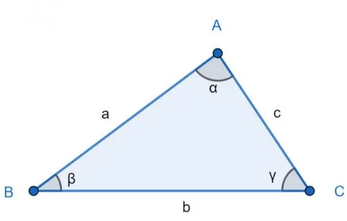
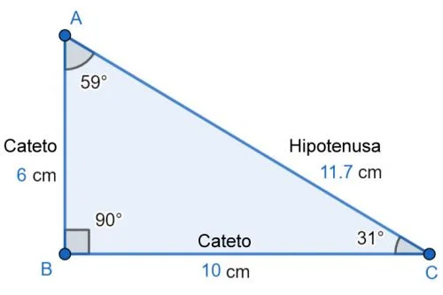
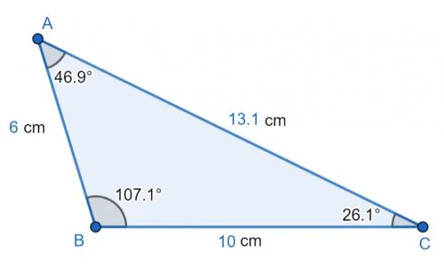
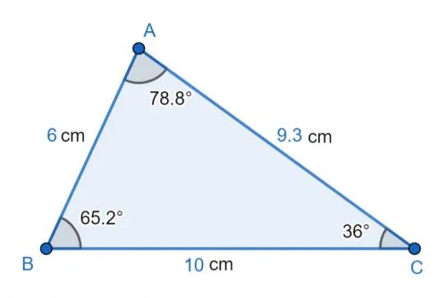

Triángulo Escaleno
Cuál es el Triángulo Escaleno (y sus características)
El triángulo escaleno es el que posee todos los lados y ángulos diferentes.
También es conocido como triángulo desigual. Es decir, es un polígono de tres
lados en el que cada lado tiene una medida y cada ángulo una amplitud
diferente.

Triángulo escaleno y sus elementos: vértices (ABC); lados (abc) y ángulos (α, β, γ).
Usando esta imagen como referencia,
podemos reconocer y enumerar los
elementos o las características del
triángulo escaleno:
- Tres vértices, identificados en la
imagen con las letras A, B y C.
- Tres lados de diferente longitud. El
segmento AB (el que va del vértice A
al vértice B) tiene una longitud de a
(minúscula); BC tiene una longitud
de b. Finalmente, AC tiene una
longitud de c. En la imagen a = 5 cm;
b = 6 cm y c = 3,6 cm.
Tres ángulos de diferente amplitud, identificados en la imagen con las
letras griegas α (alfa), β (beta) y γ (gamma), los cuales suman 180 grados en
total. La amplitud de cada ángulo es: α = 87º; β = 37º; γ = 56º.
El triángulo escaleno es uno de los tres tipos de triángulos que existen según el
tamaño de sus lados y ángulos, junto a los triángulos equilátero e isósceles.
La diferencia reside en lo siguiente: el triángulo equilátero tiene todos sus lados
y ángulos iguales. El triángulo isósceles solo tiene dos lados y dos ángulos
iguales. En cambio, todos los lados y ángulos del escaleno son desiguales.
Tipos de triángulo escaleno según sus ángulos
En general, los triángulos pueden clasificarse en rectángulos, acutángulos y
obtusángulos. Esto depende de los tipos de ángulos que posean, los cuales
pueden ser ángulos rectos (igual a 90º), agudos (menor que 90º) u obtusos
(mayor que 90º). El triángulo escaleno se presenta en los tres tipos mencionados.
Triángulo escaleno rectángulo
Posee un ángulo recto y dos ángulos agudos. Es decir, posee un ángulo con una
amplitud exacta de 90º y dos ángulos con una amplitud menor a 90º.

triangulo escaleno
El triángulo escaleno rectángulo tiene hipotenusa, al igual que todos los
triángulos rectángulos. La hipotenusa es el lado opuesto al ángulo recto y es el
segmento más largo. Los otros dos lados de un triángulo rectángulo reciben el
nombre de cateto.
Triángulo escaleno obtusángulo
Posee un ángulo obtuso y dos ángulos agudos. Es decir, uno de sus ángulos
tiene una amplitud mayor a 90º y dos de sus ángulos tienen una amplitud
menor a 90º.

Triángulo escaleno acutángulo
Posee tres ángulos agudos. Es decir, cada uno de los tres ángulos tiene una
amplitud menor a 90º.

Perímetro de un triángulo escaleno
El perímetro de un triángulo es la suma de la longitud de sus lados o
segmentos. Para calcular el perímetro de un triángulo escaleno, la fórmula
debe especificar los diferentes valores de cada lado. La fórmula es:
P=a+b+c
donde:
- P = perímetro
- a = longitud del segmento AB
- b = longitud del segmento BC
- c = longitud del segmento AC